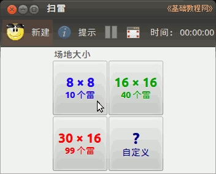
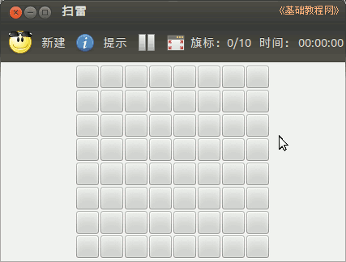
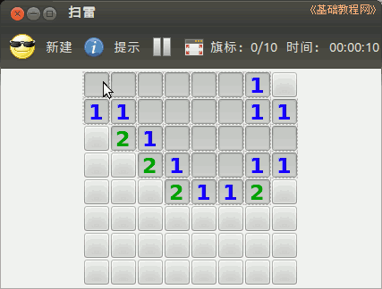
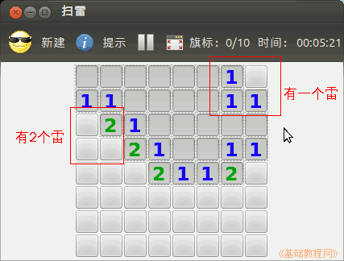
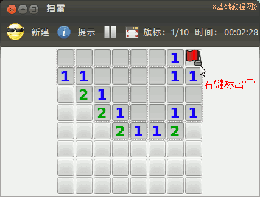
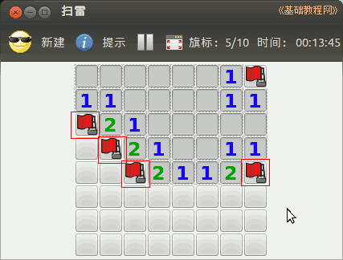
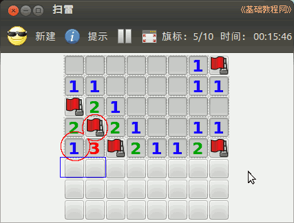
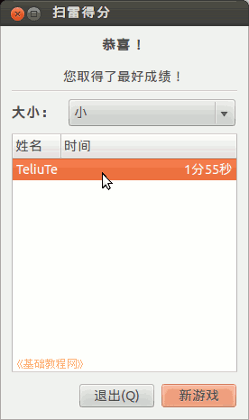
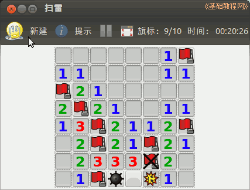

Ubuntu 入门操作指南
作者：TeliuTe 来源：基础教程网
八十六、扫雷 返回目录 下一课扫雷是一个练习鼠标的智力游戏，找出埋藏的10个地雷；
1、扫雷
1）点击左上角主按钮，在搜索中输入 sao ，打开程序，或者依次点“主按钮、所有程序、过滤结果、游戏、扫雷”；

2）选择第一个简单的8×8，它里面有10个雷，把它们找出来；

3）在四个角上点左键，先翻开一些探探路；

4）没有雷的地方是空地，数字标示挨着它的砖块下面有几个雷；

5）右上角那块肯定是雷，点右键插旗，注意是点右键，再点一次右键会取消插旗；

6）然后继续根据数字来找，尖角1肯定是雷，在左右两边的两个尖角点右键插旗；

7）标出1个雷后，数字1说明这里只有1个雷，其他相邻的都不可能，因为1说明这里只有1个，
图中左边的1的对角线上挨着一个雷了，那么它下边挨着的两个都不可能是雷，这儿只能有一个雷；

8）翻成功后出来扫雷排行榜，如果失败点工具栏上的小娃娃重新开始；
 
本节学习了扫雷的基础知识，如果你成功地完成了练习，请继续学习下一课内容；
本教程由86团学校TeliuTe制作|著作权所有
基础教程网：http://teliute.org/
美丽的校园……
转载和引用本站内容，请保留作者和本站链接。